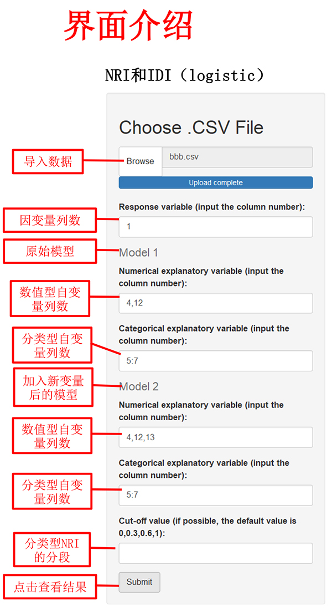
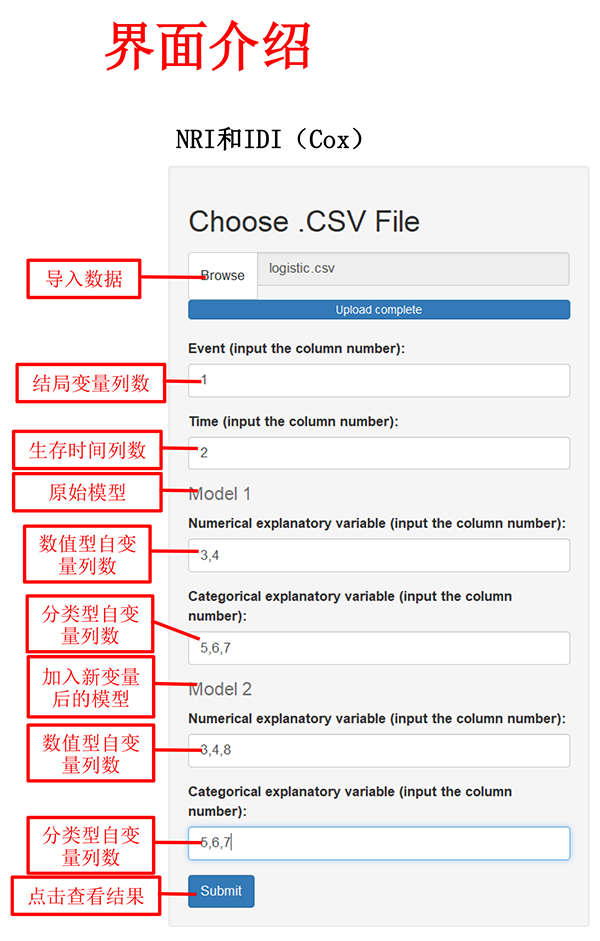
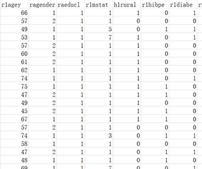
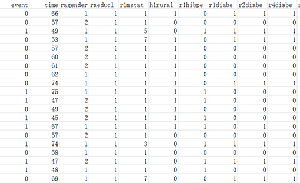
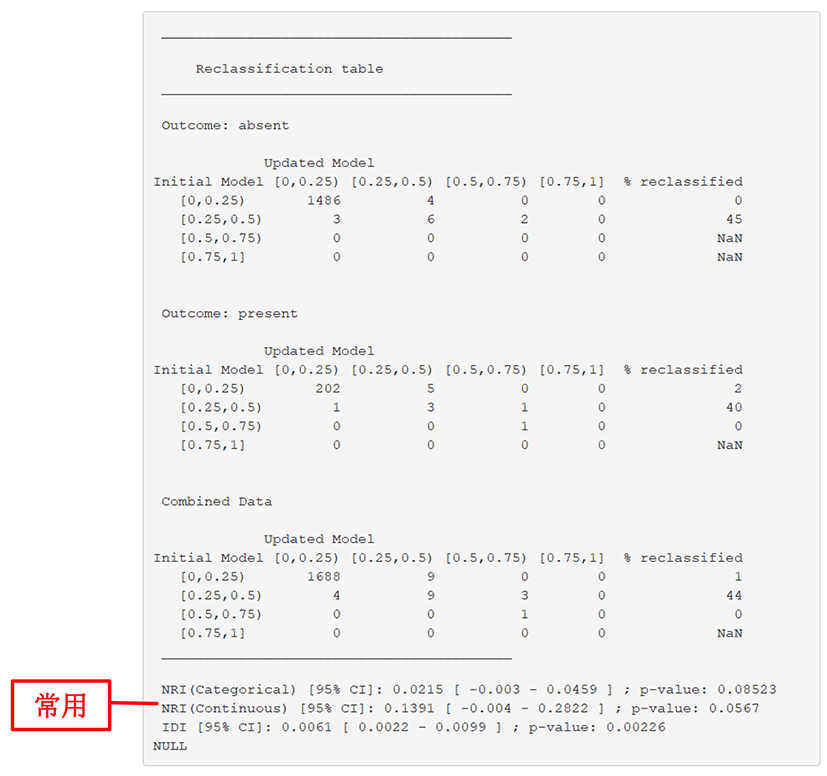
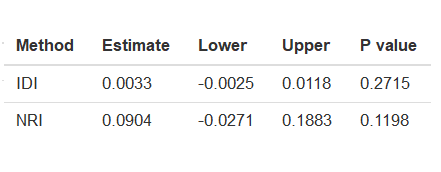

| 点击此处进行分析(基于logistic回归模型) | 点击此处进行分析(基于Cox回归模型) |
|  |  |
| 一、数据格式 | 一、数据格式 |
|  |  |
| 注： 1、数据格式为“.csv”，数据中避免中文、空格或特殊字符 2、数据变量名必须为英文、阿拉伯数字或下划线的组合 3、NRI的结果一般读取连续型结果，即第2个 4、模型2的变量要在模型1的基础上增加 5、Cut-off value的值可不填，一般需要分类型NRI时才需填写 6、自变量（Explanatory variable）可以输入多列，以英文状态下的逗号或冒号分隔，如：2,3,4或2:4 7、导入数据后，各变量所对应的列数可在输出界面显示和查询 |
注： 1、数据格式为“.csv”，数据中避免中文、空格或特殊字符 2、数据变量名必须为英文、阿拉伯数字或下划线的组合 3、模型2的变量要在模型1的基础上增加 4、采用重采样方法计算95%可信区间，运行需花费一定时间 5、NRI corresponds to the quantity defined as “1/2 NRI(>0)” in Pencina et al.(2011)(详见 https://www.ncbi.nlm.nih.gov/pmc/articles/PMC3341973/) 6、自变量（Explanatory variable）可以输入多列，以英文状态下的逗号或冒号分隔，如：2,3,4或2:4 7、导入数据后，各变量所对应的列数可在输出界面显示和查询 |
| 二、输出结果展示 | 二、输出结果展示 |
| 输出结果包括IDI、NRI（连续）、NRI（分类）结果，常使用连续的NRI 示例如下： |
输出结果包括IDI、NRI的相关结果。 示例如下： |
|  |  |